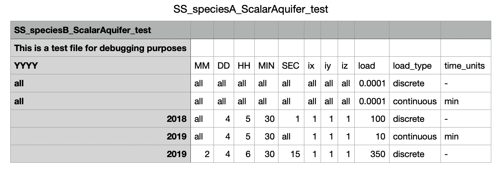

Source/Sink & External Fluxes¶
Source/Sink loads and External Fluxes use a similar data input structure. The differences are minimal and highlighted below.
The chemical sink and source files used by OpenWQ are defined in the master configuration file.
Each sink/source is defined in an individual json-block, and you can add as many json files as desired.
Principal Key 1: METADATA
|
Comments or relevant information about the data |
|
Additional information or additional comments |
Principal Key 2: (i#) (input number in sequential order)
|
|
|
|
|
|
|
Type of input,
Options: |
|
Units of input, e.g, |
|
Data format: |
|
|
ADDITIONAL KEYS
-> If DATA_FORMAT: "JSON"
Then DATA with the time series of load has the following format:
"(i#)": [YYYY,MM,DD,HH,MIN,SEC, ix,iy,iz,load, load type, time units (if continuous)]
|
Input year: |
|
Input month: |
|
Input day: |
|
Input hour: |
|
Input minute: |
|
Input second: |
|
Input ix index: |
|
Input iy index: |
|
Input iz index: |
|
Input load: |
|
Input load type: |
|
Time units of load if load type is |
-> If DATA_FORMAT: "ASCII"
Then DATA with the time series of load has the same format above but it’s provided through an ASCII file. The following additional json-keys need be included.
|
Path to ASCII file with the input data |
|
|
|
|
|
|
The JSON file supports C/C++ syntax for comments: single-line comment (//) or comment blocks (/* and */).
The symbol (i#) refers to a integer number sequence.. The symbol (s#) refers to a string input. The symbol <f#> refers to a float input value.
Example:
{
"METADATA": {
"Comment": "synthetic loading",
"Source": "test_1"
},
"1": {
"Chemical_name": "species_A",
"Compartment_name": "SCALARAQUIFER",
"Type": "source",
"Units": "kg",
"Data_Format": "JSON",
"Data": {
"1": ["all","all","all","all","all","all","all","all","all",0.0001,"discrete"],
"2": ["all","all","all","all","all","all","all","all","all",0.0001,"continuous","min"],
"3": [2018,"all",4,6,30,30,1,1,1,100,"discrete"],
"4": [2019,"all",4,6,30,"all",1,1,1,10,"continuous","min"],
"5": [2019,2,4,6,30,15,1,1,1,350,"discrete"]
}
},
"2": {
"Chemical_name": "species_B",
"Compartment_name": "SCALARAQUIFER",
"Type": "source",
"Units": "kg",
"Data_Format": "ASCII",
"Data": {
"Filepath": "SS_speciesA_ScalarAquifer_test.csv",
"Delimiter": ",",
"Number_of_header_rows": 3,
"Header_key_row": 3
}
}
}
File: SS_speciesA_ScalarAquifer_test.csv
